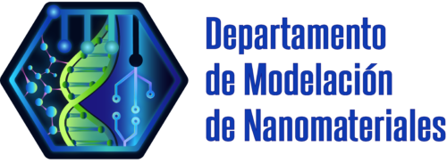

Departamento del Centro de Nanociencias y Nanotecnología Universidad Nacional Autónoma de México
El Laboratorio de Visión y Modelado Matemático forma parte del Centro de Nanociencias y Nanotecnología de la Universidad Nacional Autónoma de México. Su investigación se centra en el desarrollo de métodos de visión por computadora, modelado matemático y análisis avanzado de imágenes científicas.
El laboratorio desarrolla herramientas computacionales y modelos matemáticos que permiten analizar información visual compleja en diversas áreas científicas y tecnológicas.
Desarrollar métodos matemáticos y computacionales avanzados para el análisis e interpretación de información visual, con aplicaciones en ciencia de materiales, biología, procesamiento de imágenes científicas y aprendizaje automático.
El laboratorio busca impulsar la investigación interdisciplinaria y la colaboración internacional para generar conocimiento y soluciones innovadoras.